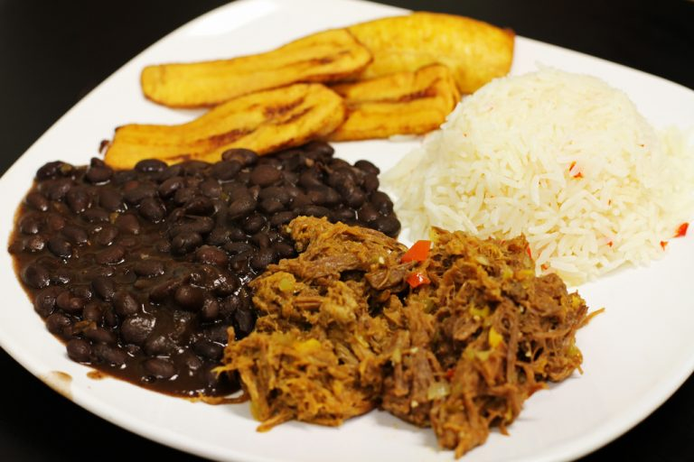

Pabellon Criollo
Caracas, junio 2019 El pabellón criollo es un plato tradicional de Venezuela reconocido como el plato nacional por excelencia que forma parte de la gastronomía venezolana.1 El pabellón criollo tradicional está compuesto por arroz blanco cocido, carne mechada, caraotas negras "refritas" (guisadas y luego sofritas en mantequilla o aceite) y tajadas de plátano maduro frito. Dependiendo de la región, a veces el plato se acompaña con queso blanco entero, otras veces con un huevo frito encima (pabellón a caballo) y en oportunidades también se acompaña con algunas lonjas de aguacate e incluso con arepas. Sin embargo, el plato original constaba de los cuatro ingredientes básicos: arroz, carne, caraotas y tajadas, y es acá donde se encuentra la clave.